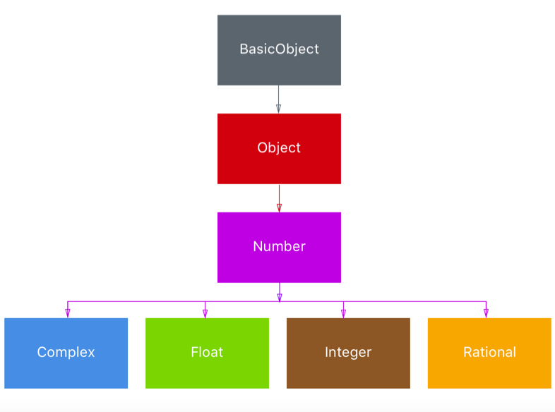

Numbers¶
Numbers Inheritance Hierarchy¶

Numeric is the class from which all higher-level numeric classes should inherit. Classes such as Integer inherit from the Numeric class. Numeric contains methods such as abs, ceil, zero?, negative?, to_int and more.
- The
Integerclass is the parent for theFixnumandBigNum. Fixnumis used for fixed length numbers.BigNumholds numbers that cannot fit in a Fixnum. The conversion happens automatically.Floatrepresent floating-point numbers.Complexrepresents complex numbers, numbers in the forma+b_i_where i is an imaginary number.Rationalrepresents rational numbers, numbers in the forma/b.
Creating Numbers¶
We can create number types from their literal values e,g :
irb(main):098:0> n = 10 => 10 irb(main):099:0> n.class => Integer
We can check what type n is using the class method or using the is_a? method as follows :
irb(main):100:0> n.is_a? Integer => true
Or if its a Float type we can use the is_float? :
irb(main):101:0> n.is_a? Float => false
Numeric Alterations¶
Numeric types allows for performing mathematical calculations.
irb(main):105:0> n = 20 => 20 irb(main):106:0> n = n+ 2 => 22
irb(main):107:0> n = n / 2.0 => 11.0 irb(main):108:0> n.class => Float irb(main):109:0> n.is_a? Numeric => true
We can also call methods on the numeric types e.g to get the absolute value as follows :
irb(main):111:0> n = -10 => -10 irb(main):112:0> n.abs => 10
Get the ceiling using the ceiling as follows :
irb(main):114:0> n = 10.6 => 10.6 irb(main):115:0> n.ceil => 11
and also the floor using the floor function as follows :
irb(main):117:0> n = 10.6 => 10.6 irb(main):118:0> n.floor => 10
We can also round integer values using the round function as follows :
irb(main):119:0> n = 10.6 => 10.6 irb(main):120:0> n.round => 11
or round down :
irb(main):121:0> n = 10.2 => 10.2 irb(main):122:0> n.round => 10
Numeric Comparison¶
We can perform numeric comparison using the number class.
>> n = 10 => 10 >> n == 10 => true >> n < 5 => false >> n <= 12 => true >> n == 10.00 => true
We can also compare the number using the spaceship operator as follows :
>> 10 <=> 11 => -1 >> 10 <=> 9 => 1 >> 10 <=> 10 => 0
We can check if the two values are equal using the eql? method as follows :
irb(main):123:0> 10.eql? 10 => true irb(main):124:0> 10.eql? 10.0 => false
Check if the values are even or odd as follows :
>> 10.odd? => false >> 10.even? => true
Check if the number is between a specific range as follows :
>> 10.between?(3,12) => true
We can use the iterators and count up to or down to a specified number as follows :
irb(main):126:0> 1.upto(3) {|n| p n} 1 2 3 => 1
or going down as follows :
irb(main):127:0> 3.downto(1) {|n| p n} 3 2 1 => 3
Parsing Numbers¶
We can get the corresponding number represented as a string :
'400'.to_i # => 400 '3.14'.to_f # => 3.14 '1.602e-19'.to_f # => 1.602e-19
The to_i coverts the number to an Integer and the to_f converts the number into a Float.
We can also pass in parameters to the methods to specify the base for the to_i method :
'405'.to_i(8) # 261 '405'.oct # 261 '405'.hex # 1029 '405'.to_i(16) # 1029
We can also convert numbers to their corresponding string in binary, octal, or hex as follows :
405.to_s(2) # 110010101 405.to_s(16) # 195
You can use the Integer and Float classes to parse and these will throw errors if the string can't be parsed.
Integer('405') # 405 i = Integer('405ab') # ArgumentError: invalid value for Integer(): "405ab" Float('4.5') # 4.5 Float('4.5f') # ArgumentError: invalid value for Float(): "4.5f"
The Integer to_s can create a string representation in every integer base. The String to_i can parse a string to a number in a supported base.
"-1001001".to_i(2) # -73 "abc".to_i(16) # 2748 -73.to_s(2) # "-1001001" 2748.to_s(16) # 2748
Random Numbers¶
The rand method is used to generate random numbers. rand returns a pseudo-random floating point number between 0.0 and 1.0, including 0.0 and excluding 1.0.
rand # 0.7376536979277991 rand # 0.7906867058221021
If we pass in a value n, it will generate a number between 0 and n - 1.
rand(10) # generates numbers between 0 and 9 rand(5..10) # generates numbers between 5 and 10
Exercise¶
- Create a routine that generates random numbers
-
Select a random value from a hash. Create an hash, here is a sample :
ruby m = { key1: 'value1', key2: 'value2', key3: 'value3' }3. Find the average, median and mode for a set of numbers passed in as an array. Test with the following :ruby mean([1,2,3,4]) # => 2.54. We have a set of players that participated in different games as follows :ruby games = [["Alice", "Bob"], ["Carol", "Ted"], ["Alice", "Mallory"], ["Ted", "Bob"]]Write code to only show the unique players that participated. The set of players should not contain duplicates. Expected output should be
"Alice", "Mallory", "Ted", "Carol", "Bob"5. Use the Luhn algorithm to verify a credit card number. More information on how the algorithm works is available on Wikipedia
Solution¶
-
They are many ways to to this. Use the
randmethods as follows to generate a random number :ruby rand(47) # generate a random number bewtween 0 and 472. We can first extract the values from the array and then choose each one at random.ruby m.values.sample # the values method returns all values as an array m[m.keys.sample] # longer version, get the random key and use it to find a value3. Here is the sample solution for finding the mean, media and mode.```ruby
mean¶
def mean(array) array.inject(array.inject(0) { |sum, x| sum += x } / array.size.to_f end
median¶
def median(array, already_sorted=false) return nil if array.empty? array = array.sort unless already_sorted m_pos = array.size / 2 array.size % 2 == 1 ? array[m_pos] : mean(array[m_pos-1..m_pos]) end
def modes(array, find_all=true) histogram = array.inject(Hash.new(0)) { |h, n| h[n] += 1; h } modes = nil histogram.each_pair do |item, times| modes << item if modes && times == modes[0] and find_all modes = [times, item] if (!modes && times > 1) or (modes && times > modes[0]) end modes ? modes[1…modes.size] : modes end
mean([1,2,3,4]) # => 2.5 median([1,2,3,4,5]) # => 3 modes([1,2,3,4]) # => nil modes([1,1,2,3,4]) # => [1] modes([1,1,2,2,3,4]) # => [1, 2] modes([1,1,2,2,3,4,4]) # => [1, 2, 4] modes([1,1,2,2,3,4,4], false) # => [1]
`` 4. We can use theSet` class found in the set standard library. We will need to require it as follows :```ruby require 'set'
games = [["Alice", "Bob"], ["Carol", "Ted"], ["Alice", "Mallory"], ["Ted", "Bob"]] players = games.inject(Set.new) { |set, game| game.each { |p| set << p }; set } ```
We can also convert an array to a set using the
to_setmethod. This wil remove duplicates. 5. Many implementations of the algorithm.